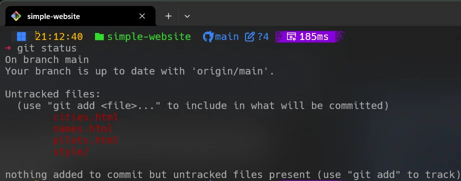

O comando git status é uma ferramenta fundamental no sistema de controle de versão do Git. Ele ajuda você a acompanhar
o estado do seu diretório de trabalho e da área de teste. O comando informa sobre as alterações que foram feitas nos arquivos,
ajudando você a entender o que está preparado para o próximo commit, o que ainda não está preparado e quais arquivos não
estão sendo rastreados pelo Git. É uma parte essencial do fluxo de trabalho que ajuda os desenvolvedores a garantir que suas
alterações de código sejam gerenciadas com precisão e confirmadas adequadamente.
Os arquivos em um repositório Git podem estar em um dos seguintes estados:
É muito importante que os conceitos acima definidos estejam bem claros para que de agora em diante ao seguir pelos vários comandos do Git, você possa entender o que está acontecendo com os arquivos do seu repositório. O comando git status é uma ferramenta fundamental para que você possa acompanhar o estado dos arquivos do seu repositório e saber o que está acontecendo com eles.
Este comando simples, quando executado sem argumentos adicionais, exibe uma visão abrangente do status do seu repositório. Ele lista todos os arquivos que foram alterados em seu diretório de trabalho, mostrando se eles estão preparados ou não para confirmação. Além disso, ele lista todos os arquivos não rastreados sobre os quais o Git ainda não tem informações.
A imagem anterior apresenta uma coleção de arquivos que não foram rastreados pelo git, conhecidos como 'untracked files'.
Além disso, indica que não existem arquivos prontos para serem incluídos no próximo commit. No entanto, ao utilizarmos o comando git add, podemos selecionar
esses arquivos para serem preparados e incluídos na próxima atualização do repositório, permitindo um controle mais organizado e eficiente das alterações realizadas no projeto.